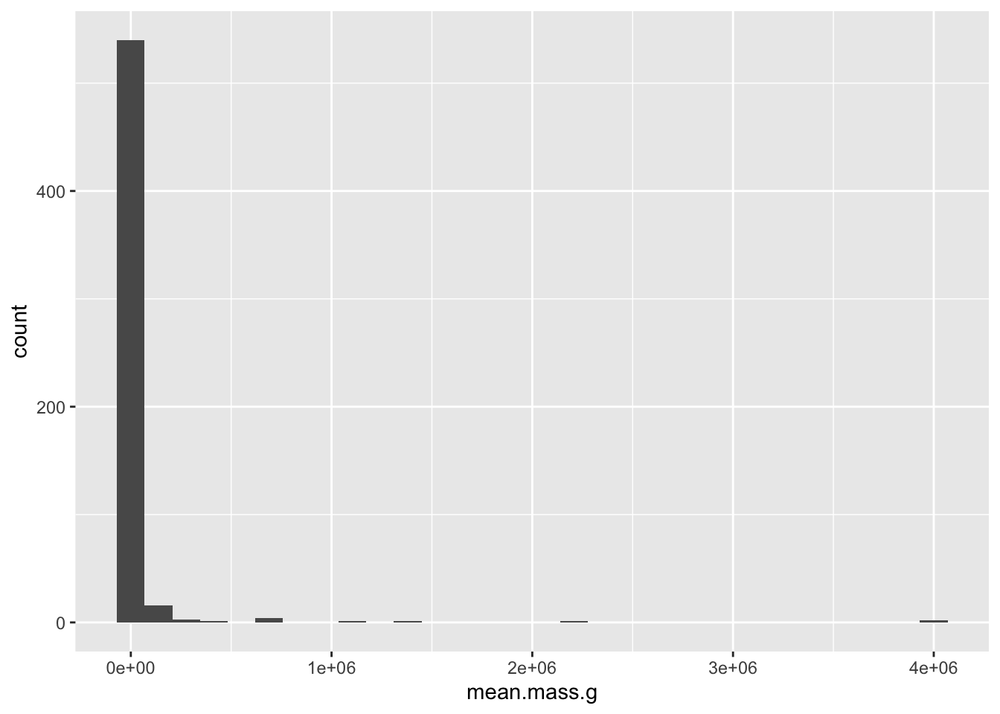
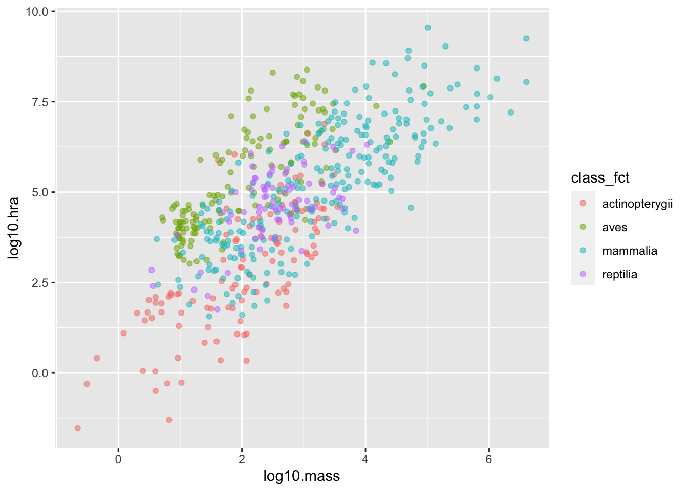
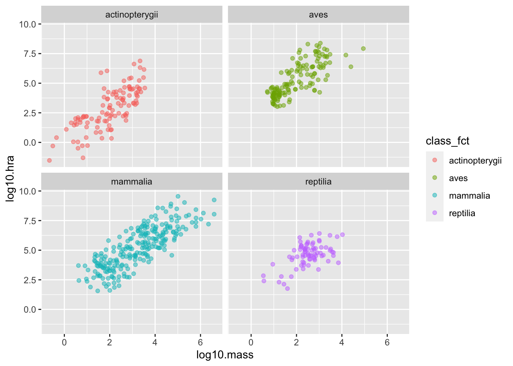

E Practice Problems
You need more practice with the functions in Chapter 3. To begin, open a fresh file and begin by loading the tidyverse and the here package used to construct paths:
Next,
use here::here to construct a path to a file and readr::read_csv to read that file:
Parsed with column specification:
cols(
person_id = col_character(),
personal_name = col_character(),
family_name = col_character()
)We don’t need to write out fully-qualified names—here and read_csv will do—but
we will use them to make it easier to see what comes from where.
Next,
have a look at the tibble person,
which contains some basic information about a group of foolhardy scientists
who ventured into the Antarctic in the 1920s and 1930s in search of things best left undisturbed:
# A tibble: 5 x 3
person_id personal_name family_name
<chr> <chr> <chr>
1 dyer William Dyer
2 pb Frank Pabodie
3 lake Anderson Lake
4 roe Valentina Roerich
5 danforth Frank Danforth How many rows and columns does this tibble contain?
[1] 5[1] 3(These names don’t have a package prefix because they are built in.)
Let’s show that information in a slightly nicer way
using glue to insert values into a string
and print to display the result:
person has 5 rows and 3 columnsIf we want to display several values,
we can use the function paste to combine the elements of a vector.
colnames gives us the names of a tibble’s columns,
and paste’s collapse argument tells the function
to use a single space to separate concatenated values:
person columns are person_id personal_name family_nameTime for some data manipulation. Let’s get everyone’s family and personal names:
# A tibble: 5 x 2
family_name personal_name
<chr> <chr>
1 Dyer William
2 Pabodie Frank
3 Lake Anderson
4 Roerich Valentina
5 Danforth Frank and then filter that list to keep only those that come in the first half of the alphabet:
# A tibble: 3 x 2
family_name personal_name
<chr> <chr>
1 Dyer William
2 Lake Anderson
3 Danforth Frank It would be more consistent to rewrite this as:
# A tibble: 3 x 2
family_name personal_name
<chr> <chr>
1 Dyer William
2 Lake Anderson
3 Danforth Frank It’s easy to add a column that records the lengths of family names:
# A tibble: 5 x 4
person_id personal_name family_name name_length
<chr> <chr> <chr> <int>
1 dyer William Dyer 4
2 pb Frank Pabodie 7
3 lake Anderson Lake 4
4 roe Valentina Roerich 7
5 danforth Frank Danforth 8and then arrange in descending order:
person %>%
dplyr::mutate(name_length = stringr::str_length(family_name)) %>%
dplyr::arrange(dplyr::desc(name_length))# A tibble: 5 x 4
person_id personal_name family_name name_length
<chr> <chr> <chr> <int>
1 danforth Frank Danforth 8
2 pb Frank Pabodie 7
3 roe Valentina Roerich 7
4 dyer William Dyer 4
5 lake Anderson Lake 4E.1 Do I need even more practice?
Yes. Yes, you do. Let’s load a slightly larger dataset:
Parsed with column specification:
cols(
visit_id = col_double(),
person_id = col_character(),
quantity = col_character(),
reading = col_double()
)# A tibble: 21 x 4
visit_id person_id quantity reading
<dbl> <chr> <chr> <dbl>
1 619 dyer rad 9.82
2 619 dyer sal 0.13
3 622 dyer rad 7.8
4 622 dyer sal 0.09
5 734 pb rad 8.41
6 734 lake sal 0.05
7 734 pb temp -21.5
8 735 pb rad 7.22
9 735 <NA> sal 0.06
10 735 <NA> temp -26
# … with 11 more rowsIf we want an overview of our data’s properties,
we can use the aptly-named summarize function:
# A tibble: 1 x 0Removing records with missing readings is straightforward:
# A tibble: 20 x 4
visit_id person_id quantity reading
<dbl> <chr> <chr> <dbl>
1 619 dyer rad 9.82
2 619 dyer sal 0.13
3 622 dyer rad 7.8
4 622 dyer sal 0.09
5 734 pb rad 8.41
6 734 lake sal 0.05
7 734 pb temp -21.5
8 735 pb rad 7.22
9 735 <NA> sal 0.06
10 735 <NA> temp -26
11 751 pb rad 4.35
12 751 pb temp -18.5
13 752 lake rad 2.19
14 752 lake sal 0.09
15 752 lake temp -16
16 752 roe sal 41.6
17 837 lake rad 1.46
18 837 lake sal 0.21
19 837 roe sal 22.5
20 844 roe rad 11.2 Removing rows that contain any NAs is equally easy, though it may be statistically unsound:
We can now group our data by the quantity measured
and count the number of each—the column is named n automatically:
# A tibble: 3 x 2
# Groups: quantity [3]
quantity n
<chr> <int>
1 rad 8
2 sal 7
3 temp 3How are the readings of each type distributed?
cleaned %>%
dplyr::group_by(quantity) %>%
dplyr::summarize(low = min(reading),
mid = mean(reading),
high = max(reading))`summarise()` ungrouping output (override with `.groups` argument)# A tibble: 3 x 4
quantity low mid high
<chr> <dbl> <dbl> <dbl>
1 rad 1.46 6.56 11.2
2 sal 0.05 9.24 41.6
3 temp -21.5 -18.7 -16 After inspection,
we realize that most of the salinity measurements lie between 0 and 1,
but a handful range up to 100.
During a brief interval of lucidity,
the librarian who collected the battered notebooks from which the data was transcribed
informs us that one of the explorers recorded percentages rather than actual values.
We therefore decide to normalize all salinity measurements greater than 1.0 using ifelse
(a two-branch analog of case_when):
cleaned <- cleaned %>%
dplyr::mutate(reading = ifelse(quantity == 'sal' & reading > 1.0,
reading/100,
reading))
cleaned# A tibble: 18 x 4
visit_id person_id quantity reading
<dbl> <chr> <chr> <dbl>
1 619 dyer rad 9.82
2 619 dyer sal 0.13
3 622 dyer rad 7.8
4 622 dyer sal 0.09
5 734 pb rad 8.41
6 734 lake sal 0.05
7 734 pb temp -21.5
8 735 pb rad 7.22
9 751 pb rad 4.35
10 751 pb temp -18.5
11 752 lake rad 2.19
12 752 lake sal 0.09
13 752 lake temp -16
14 752 roe sal 0.416
15 837 lake rad 1.46
16 837 lake sal 0.21
17 837 roe sal 0.225
18 844 roe rad 11.2 To answer our next set of questions,
we need data about when each site was visited.
Let’s read visited.csv and discard entries that are missing the visit date:
Parsed with column specification:
cols(
visit_id = col_double(),
site_id = col_character(),
visit_date = col_date(format = "")
)# A tibble: 7 x 3
visit_id site_id visit_date
<dbl> <chr> <date>
1 619 DR-1 1927-02-08
2 622 DR-1 1927-02-10
3 734 DR-3 1930-01-07
4 735 DR-3 1930-01-12
5 751 DR-3 1930-02-26
6 837 MSK-4 1932-01-14
7 844 DR-1 1932-03-22and then combine that table with our cleaned measurement data. We will use an inner join that matches records on the visit ID; dplyr also provides other kinds of joins should we need them.
We can now find the date of the highest radiation reading at each site:
combined %>%
dplyr::filter(quantity == "rad") %>%
dplyr::group_by(site_id) %>%
dplyr::mutate(max_rad = max(reading)) %>%
dplyr::filter(reading == max_rad)# A tibble: 3 x 7
# Groups: site_id [3]
visit_id site_id visit_date person_id quantity reading max_rad
<dbl> <chr> <date> <chr> <chr> <dbl> <dbl>
1 734 DR-3 1930-01-07 pb rad 8.41 8.41
2 837 MSK-4 1932-01-14 lake rad 1.46 1.46
3 844 DR-1 1932-03-22 roe rad 11.2 11.2 or:
combined %>%
dplyr::filter(quantity == "rad") %>%
dplyr::group_by(site_id) %>%
dplyr::top_n(1, reading) %>%
dplyr::select(site_id, visit_date, reading)# A tibble: 3 x 3
# Groups: site_id [3]
site_id visit_date reading
<chr> <date> <dbl>
1 DR-3 1930-01-07 8.41
2 MSK-4 1932-01-14 1.46
3 DR-1 1932-03-22 11.2 The function dplyr::lag shifts the values in a column.
We can use it to calculate the difference in radiation at each site
between visits:
combined %>%
dplyr::filter(quantity == "rad") %>%
dplyr::group_by(site_id) %>%
dplyr::mutate(delta_rad = reading - dplyr::lag(reading)) %>%
dplyr::arrange(site_id, visit_date)# A tibble: 7 x 7
# Groups: site_id [3]
visit_id site_id visit_date person_id quantity reading delta_rad
<dbl> <chr> <date> <chr> <chr> <dbl> <dbl>
1 619 DR-1 1927-02-08 dyer rad 9.82 NA
2 622 DR-1 1927-02-10 dyer rad 7.8 -2.02
3 844 DR-1 1932-03-22 roe rad 11.2 3.45
4 734 DR-3 1930-01-07 pb rad 8.41 NA
5 735 DR-3 1930-01-12 pb rad 7.22 -1.19
6 751 DR-3 1930-02-26 pb rad 4.35 -2.87
7 837 MSK-4 1932-01-14 lake rad 1.46 NA Going one step further, we can create a list of sites at which radiation increased between any two visits:
combined %>%
dplyr::filter(quantity == "rad") %>%
dplyr::group_by(site_id) %>%
dplyr::mutate(delta_rad = reading - dplyr::lag(reading)) %>%
dplyr::filter(!is.na(delta_rad)) %>%
dplyr::summarize(any_increase = any(delta_rad > 0)) %>%
dplyr::filter(any_increase)`summarise()` ungrouping output (override with `.groups` argument)# A tibble: 1 x 2
site_id any_increase
<chr> <lgl>
1 DR-1 TRUE E.2 Please may I create some charts?
Certainly. We will use data on the mass and home range area (HRA) of various species from:
Tamburello N, Côté IM, Dulvy NK (2015) Data from: Energy and the scaling of animal space use. Dryad Digital Repository. https://doi.org/10.5061/dryad.q5j65
Parsed with column specification:
cols(
.default = col_character(),
mean.mass.g = col_double(),
log10.mass = col_double(),
mean.hra.m2 = col_double(),
log10.hra = col_double(),
preymass = col_double(),
log10.preymass = col_double(),
PPMR = col_double()
)See spec(...) for full column specifications.# A tibble: 6 x 24
taxon common.name class order family genus species primarymethod N
<chr> <chr> <chr> <chr> <chr> <chr> <chr> <chr> <chr>
1 lake… american e… acti… angu… angui… angu… rostra… telemetry 16
2 rive… blacktail … acti… cypr… catos… moxo… poecil… mark-recaptu… <NA>
3 rive… central st… acti… cypr… cypri… camp… anomal… mark-recaptu… 20
4 rive… rosyside d… acti… cypr… cypri… clin… fundul… mark-recaptu… 26
5 rive… longnose d… acti… cypr… cypri… rhin… catara… mark-recaptu… 17
6 rive… muskellunge acti… esoc… esoci… esox masqui… telemetry 5
# … with 15 more variables: mean.mass.g <dbl>, log10.mass <dbl>,
# alternative.mass.reference <chr>, mean.hra.m2 <dbl>, log10.hra <dbl>,
# hra.reference <chr>, realm <chr>, thermoregulation <chr>, locomotion <chr>,
# trophic.guild <chr>, dimension <chr>, preymass <dbl>, log10.preymass <dbl>,
# PPMR <dbl>, prey.size.reference <chr>A few keystrokes show us how the masses of these animals are distributed:
`stat_bin()` using `bins = 30`. Pick better value with `binwidth`.
The distribution becomes much clearer if we plot the logarithms of the masses,
which are helpfully precalculated in log10.mass:
`stat_bin()` using `bins = 30`. Pick better value with `binwidth`.
Let’s tidy that up a bit:
ggplot2::ggplot(hra) +
ggplot2::geom_histogram(mapping = aes(x = log10.mass), bins = 100) +
ggplot2::ggtitle("Frequency of Species Masses") +
ggplot2::xlab("Log10 of Mass") +
ggplot2::ylab("Number of Species") +
ggplot2::theme_minimal()
How are mass and home range area related?

Does the relationship depend on the class of animal? (Here, we use the word “class” in the biological sense: the class “aves” is birds.)
hra %>%
dplyr::mutate(class_fct = as.factor(class)) %>%
ggplot2::ggplot(mapping = aes(x = log10.mass, y = log10.hra, color = class_fct)) +
ggplot2::geom_point(alpha = 0.5)
*What’s a Factor?
The code above creates a new column
class_fctby converting the text values inclassto a factor. Other languages call this an enumeration: we will discuss factors in more detail in Chapter 7.
Our chart may be clearer if we display the facets separately:
hra %>%
dplyr::mutate(class_fct = as.factor(class)) %>%
ggplot2::ggplot(mapping = aes(x = log10.mass, y = log10.hra, color = class_fct)) +
ggplot2::geom_point(alpha = 0.5) +
ggplot2::facet_wrap(~class_fct)
If we want to look at the mass-area relationship more closely for birds, we can construct a regression line:
hra %>%
dplyr::filter(class == "aves") %>%
ggplot2::ggplot(mapping = aes(x = log10.mass, y = log10.hra)) +
ggplot2::geom_point(alpha = 0.5) +
ggplot2::geom_smooth(method = lm, color = 'red')`geom_smooth()` using formula 'y ~ x'
Drilling down even further, we can create a violin plot of mass by order for the birds (where “order” is the biological division below “class”):
hra %>%
dplyr::filter(class == "aves") %>%
dplyr::mutate(order_fct = as.factor(order)) %>%
ggplot2::ggplot(mapping = aes(x = order_fct, y = log10.mass, color = order_fct)) +
ggplot2::geom_violin()
Changing just one line gives us a box plot instead:
hra %>%
dplyr::filter(class == "aves") %>%
dplyr::mutate(order_fct = as.factor(order)) %>%
ggplot2::ggplot(mapping = aes(x = order_fct, y = log10.mass, color = order_fct)) +
ggplot2::geom_boxplot()
And if we want to save our chart to a file, that’s just one more call as well:
hra %>%
dplyr::filter(class == "aves") %>%
ggplot2::ggplot(mapping = aes(x = log10.mass, y = log10.hra)) +
ggplot2::geom_point(alpha = 0.5) +
ggplot2::geom_smooth(method = lm, color = 'red')`geom_smooth()` using formula 'y ~ x'
Saving 7 x 5 in image
`geom_smooth()` using formula 'y ~ x'